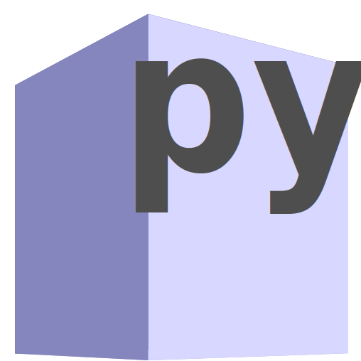

Welcome to pykhaz.github.io
Index page of user pykhaz
Contents
-
khcolors
 repo README | documentationPython package/application: cli colour chooser, created on 2024.10.29
Python application for choosing colours in the cli; with possible specification of `rich` or `css` palettes. -
termcolors
repo README | documentationPython package/application: ansi colour code generator, created on 2025.01.01
small shell utility for working with true-color (24-bit) ANSI escape sequences in the terminal. It provides a simple way to generate foreground or background ANSI codes from RGB color values. -
Learning Vim
articleA short article about absolute basics of Vim, posted on 2024.11.24
Short article proving that Vim can be used even with minimal knowledge of the application. -
DuckDuckGo Advanced
DuckDuckGo Advanced search engineAn interface to DuckDuckGo search engine, with additional search parameters.
Webpage providing an interface to DuckDuckGo search engine, with additional search parameters:- main topic
- words to include/exclude
- webpages to include/exclude